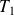
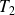
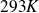
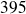

Calcul haute performance pour l´optimisation de récepteurs solaires - Simulation d´écoulements turbulents fortement anisothermes
JCCC 2007
L'objectif de ce travail est d'étudier, à l'aide de la Simulation des Grandes échelles (SGE), les effets d'un fort gradient de température sur un écoulement turbulent. Ces contraintes dynamique et thermique se rencontrent au sein des récepteurs de centrales électriques solaires. Le récepteur solaire est soumis, d'un coté, à des températures très importantes obtenues grâce au rayonnement solaire, et de l'autre, à la température ambiante. On cherche alors à capter le maximum d'énergie thermique dans le fluide circulant à travers le récepteur.
Un fort gradient de température a un effet non négligeable sur un écoulement turbulent et l'évolution des phénomènes physiques n'est pas précisément caractérisée. Une configuration académique, à savoir un canal plan bi-périodique, est utilisée afin de déterminer le plus précisément possible l'influence de la thermique sur la dynamique et les interactions qui en découlent. Un fluide turbulent circule entre deux plaques maintenues à des températures constantes (

et

) différentes l'une de l'autre. La température
de la plaque inférieure est fixée à

et, selon les simulations numériques, le rapport de température évolue. Le débit est imposé afin d'obtenir un nombre de Reynolds de frottement de

ou de
 .
.
Les simulations sont réalisées à l'aide d'un code de calcul développé par le CEA de Grenoble : Trio_U. Les équations de Navier-Stokes et de conservation de l'énergie sont simplifiées grâce à l'hypothèse de Bas-Mach. Cette approximation permet de faire varier la masse volumique en fonction de la température et évite les ondes acoustiques dont les effets sont importants dans les écoulements supersoniques. Le modèle sous-maille utilisé est le modèle Wale (Wall Adapting Local Eddy) qui permet une bonne prise en compte des effets de proche paroi. Différentes études sont effectuées et nous avons considéré plusieurs rapports de température (allant jusqu'à 5). Les résultats présentés porteront principalement sur un ratio de 2. Le nombre de Prandtl sous maille est soit constant soit calculé dynamiquement afin de déterminer son influence sur l'écoulement.